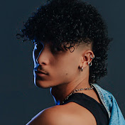
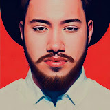
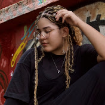
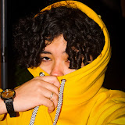

Vou falar um pouco sobre um dos meus gosto musicais, que no caso são os raps de animes.
São vários canais que escuto mas os que mais estou ouvindo são dos canais, Novatroop, AniRap, Henrique Mendonça, Anny, D.Y.A, e Takab.
Abaixo vou colocar algumas das musicas que escuto de cada canal pra caso você queira ouvir.
Canal: Novatroop.
Ciclo de Devoção / Douma.
Essa música do Douma, eu gostei não apenas da letra e batita mas também da estética do video.
A mistura de cores entre roxo e verde neon chamou bastante atenção e combinou com o clipe.
Divina Facínadora / Sukuna
Esse é um dos meus favoritos desse canal, a edição de video, a letra, a batida.
Eu gosto quando eles fazem as cenas do mangá e editam, fazendo como uma animação.
Linhagem Profana / Dio Brando.
Eu amo que o criador desse canal usa palavras ricas nas letras.
O jeito que ele combina com a melodia, simplismente perfeito.
Simulacro Perfeito / Kenjaku.
Esse é um dos melhores na minha opinião, porque pra mim essa combinou muito com a vibe do personagem.

Canal: AniRap.
Lixo.
As músicas do AniRap, eu gosto porque pra mim elas retratam mais o estado emocional dos personagens, principalmente o lado de raiva / vingança.
3 Divindades.
Shibuya.
Plano Perfeito.
Mortes.
A melhor coisa que tem, é quando os canais se juntam pra cantar no clipe.

Canal: Henrique Mendonça.
Ciclo Perfeito.
O Hino da Humanidade.
Invencível.
Dentro do Mar.
Assim como os outros, eu gosto desse canal porque tem uma ótima batida, e letra.
Também gosto muito da voz dele, acho impactante.

Canal: Anny.
Anjo Caído.
Fiquei viciada nessa música.

Canal: D.Y.A
Energia Zero / Maki.
Canal de mulheres que conheço e gosto atualmente.
Antigamente eu ouvia mais Felícia Rock, que é uma das minhas favoritas.
Canal: Takab.
E pra finalizar, o canal do Taka, eu gosto que as músicas dele são mais calmas e poéticas.
Sete Mares.
Noite Serena.
Lua de Neon.
Carta ao Tempo.
Ciclo Infinito.
Elas são mais calmas, mais tranquilas.
Tirando esse último, onde ele mostra o estado emocial/mental, do Geto mudando.
Recomendo ouvir essa com fones de ouvido.

Obrigada por ter lido até aqui !
Voltar para o início